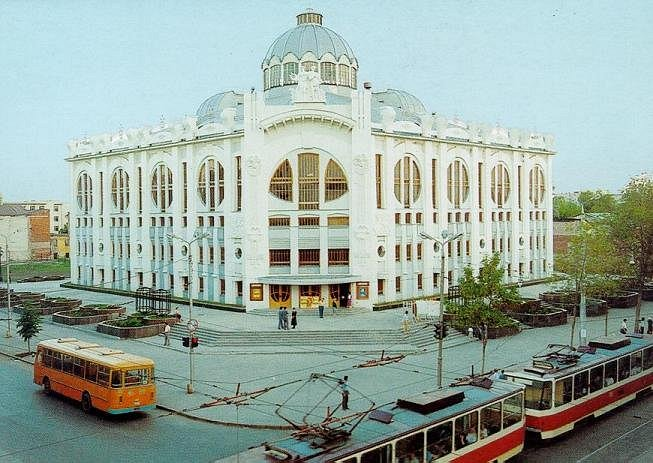

Здание самарской филармонии построено на месте цирка Олимп, 1907г постройки. Основана филармония в 1940г.
10 августа 1969 г. в Самаре открылось новое здание цирка. Капитальное здание было рассчитано на 2185 мест. Цирк был построен по типовому проекту, этот же проект внешнего вида и внутреннего устройства здания цирка использовался еще в 10 городах Советского Союза: в Уфе, Новосибирске, Донецке, Кривом Роге, Перми, Воронеже, Ворошиловграде, Харькове, Брянске, Череповце.